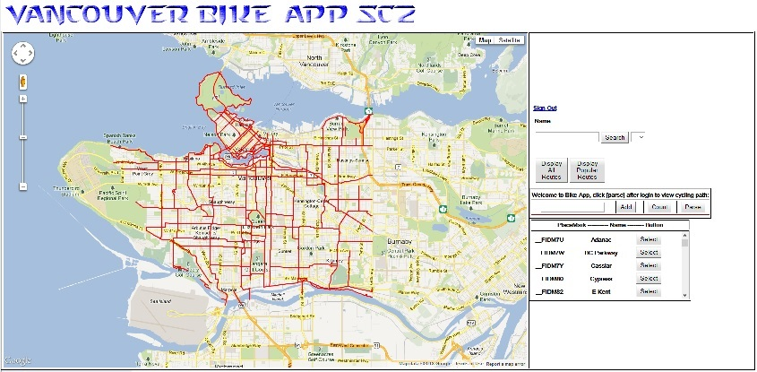
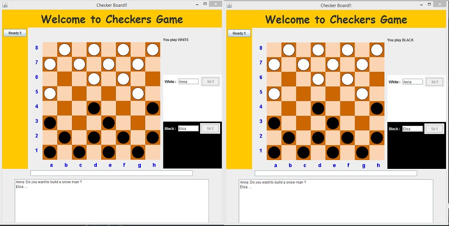
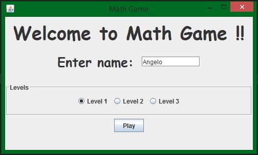
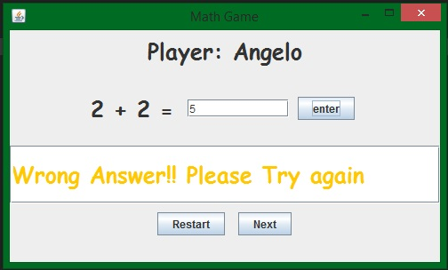
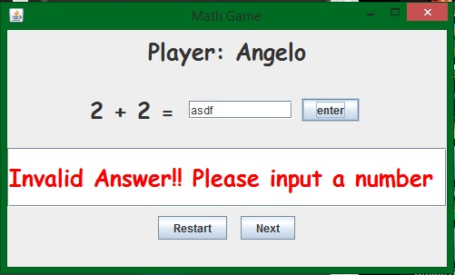
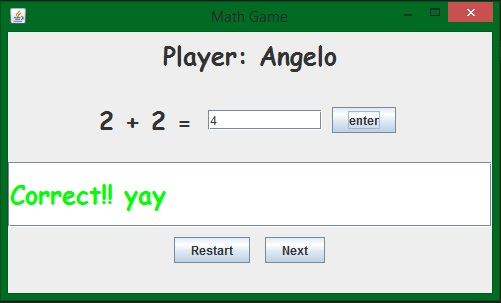
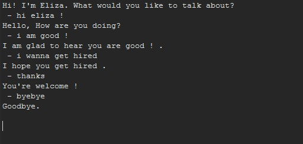
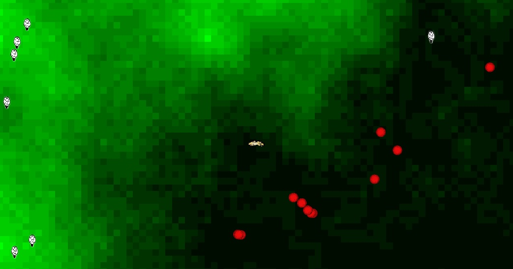
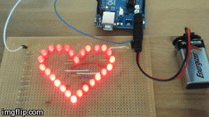

Java
CodeMetro (Team) View on GitHub TOP
Description: CodeMetro is a Visualization tool that makes a representation of a GitHub code base as a moving subway system map. Each station/node in the subway system will represent Java classes and trains will represent data being passed from one class to another.
Collaborated with:
- Tony Chu
- Michael Kwan
- Kenneth Shen
How to run: Run CodeMetro.java as an applet. Supply the absolute path to a local git repository when prompted.
BikeApp (Team) View on GitHub TOP
- 
Routes being displayed
Description: BikeApp is a tool to show all bike routes in metro Vancouver based on the data from the Vancouver Open Data Catalogue. The Data bikeways.kml is parsed into the app and being displayed with GWT. You may choose with lanes. Users need to log in by their google account before using the app. Previous route choices are be stored on their profile.
Collaborated with:
- Colin Ta
- Peter Zhang
- Feiyi(Joey) Xiang
How to run: Run BikeApp.java (Requires older versions of Eclipse and Firefox.)
Online Store (Team) View on GitHub TOP
Description: Online Store is a music store where people can purchase CD albumbs. SQL is used to store customer profiles and their orders. Also, it records the inventory availability.
Collaborated with:
- Andrew Cornax
- David Li
- Montserrat Slim
How to run: Run MainInterface.java (Requires SQL)
Checkers (Solo) View on GitHub TOP
- 
Server and Client
Description: Checkers game where 2 players can play simultaneously. The players can chat to one another.
How to run: Run GameServer.java then run GameClient.java
How to play: Enter your name to which colour you desire then press ready to notify the other player. Buttons will disable once you pick which colour to play.
Math Game (Solo) View on GitHub TOP
- 
Introduction - 
If you answer wrongly - 
If your answer is invalid - 
If you answer correctly
Description: A math game for kids! It allows the player to solve simple arithmetic. The player cannot skip a question until the current question is answered. The game will respond depnding on how the player do on a question.
How to run: Run MathGameViewer.java
How to play: Enter your name, game difficulty and press play. Answer each question corretly to get to the next question. You cannot go to the next question without answering correctly. To get to the next level, you have to answer 5 question in a row.
Soundex (Solo) View on GitHub TOP

Interactive text field
Description: Soundex program where it estimates if two last names are the same. This is a smiliar program that census uses as an indexing system.
How to run: Run Soundex.java
How to use: Enter a last name and another last name. The program will tell you if they sound the same. It will terminate if you enter non-alphabets.
Eliza Bot (Solo) View on GitHub TOP
- 
Interactive text field
Description: You can chat with ELIZA and she will reply in such a way on how you talk to her. She will read keywords from your sentences.
How to run: Run Eliza.java
How to use: Type in anything you want to tell ELIZA.
C/C++
-- soon --
C#
Wulf ver 1.1 (Team - Global Game Jam 2013)View on GitHub TOP
- 
The wolf in the middle
Description: Created in Global Game Jam 2013.
Wulf is a game where a wolf chases sheeps all over a map with different elevations.
A lighter coloured floor tile indicates a higher elevation and a more darker floor tile indicates a lower elevation. Acceleration and turn rate of the wolf is also taken into account.
Red balls are installed later on to push around the hills.
How to run: Run the program in MV C#
How to play: Use AWSD as the direction keys to chase the sheeps or push a ball around. Xbox controller is also implemented. If you get to eat a sheep, the controller vibrates like a heartbeat.
Collaborated with:
- Colin Cove
- Ray Kellough
- Patrick Obrien
- Brandon Yuh
HTML/PHP
HTML project (Solo) View on GitHub TOP
Everything on sale!!
Description: A website where you "can buy" laptops or desktops. By selecting a product, you can submit an order and it will request for shipping and payment information. Then these information will be proccessed by a php script to complete the form.(nothing really happens because information doesn't get send else where.)
DueDates (Facebook Hackathon - Team) View on GitHub TOP
Description: FB DueDates is a Facebook App that creates an event based on an XML input file. The idea of this app is for professors from a university can upload an XML file with detailed dates of homework, midterms, papers, final exams, etc. Then, this app will create an event page for every each date and invites all students in that class. Students, can RSVP but more importantly it will be a constant reminder on their facebook page of school due dates.
Collaborated with:
- John Tanner
- Ray Kellough
- Patrick Obrien
Hardware
Heart Beat - Arduino (Solo) TOP
- 
Like a heartbeat
Description: Used Arduino to visually simulate a human heartbeat via LED. I soldered the LED with a 330 Ohm resistor per LED in parallel. Used a 9V battery to power the Arduino and made it portable. Codes are from "Copyright 2008 Todd Troxell" filename heartbeat2.c.